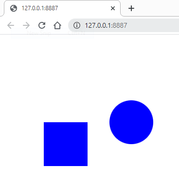

After all the nessesary steps have been followed (p5 is avilable, index.html is included, file is created with extension text.js) javascript is pretty easy. First we are going to learn about the basic setup before you do anything. It goes like this:
When you run this you shuld not see anything. That's okay. First we are going to learn the commands used. The setup() function is to get things ready, like creating objects, the draw() is to draw things again and again, this can be used to show movement. These are one of the most crucial functions in Javascript using p5. The createCanvas(), creates your workspace, the 2 arguements it takes are width and height. And finally the background() will give a background, in thic case white. Now try changing the background, instead of 255, give it 0.
As a result you get a black background. Now lets add a rectangle function.
the result should be something like this....
the 4 arguements that rect() takes are x, y, width and height. x, y are where it shuld be on a grid of a width of the width of the canvas and a height equal to the height of the canvas. The last 2 are width and height, which control the width and height in pixels. Go ahead, play with the rect(). Like this you can make multiple rectangles.
Now we are going to learn about the fill() function. Above the rect(), write fill(), give a rgb color, see your result.
Did you get the desired result. Good! Now, put fill below rect(), run it. And it does not work, fill only fills whats after it below it.
Now we are going to learn how to make ovals, using the ellipse(). Arguements are, x, y, width, height
To thicken the borders use the strokeWeight() function.
Now for the last line of basic code I am going to teach you today, is the noStroke. Since stroke means borderThickness, noStroke means noBorderThickness, or noBorder.